En la segunda parte llegó una vez al área y arruinó al Madrid , arrebatándole su manto de armiño artificial ; despojándolo incluso de sus despojos.
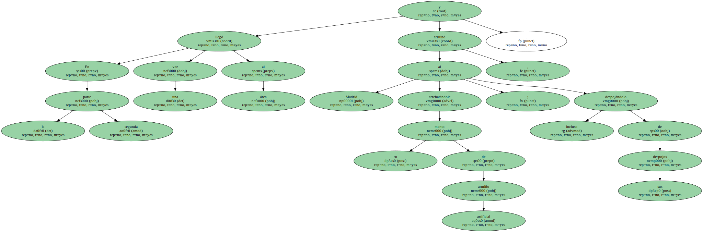" Es un ladrón que me ha robado todo " , cantaría el " inefablemente plañidero Perales " ( frase que quizá le he plagiado inconscientemente a Carlos Boyero ).
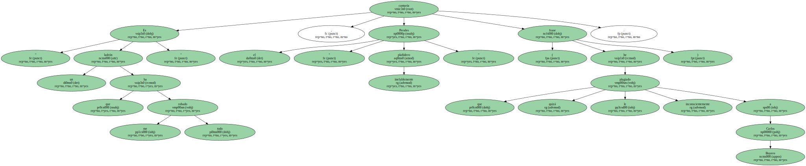¿ Y cómo es él.
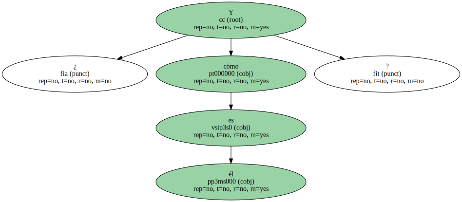¿ Y cómo es el Barcelona.
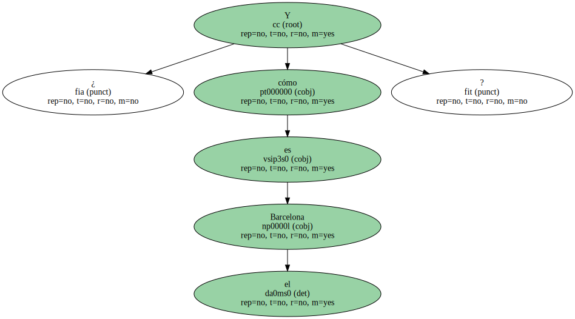El Barcelona es la conciencia malsana del Madrid , su espejo oscuro , la representación más visible de una decadencia siquiera temporal y , el sábado , dignísima de juego y garras estériles.
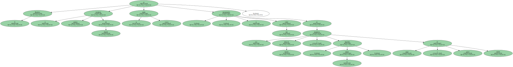Le ha robado al Madrid la esencia y la envoltura.

Alma , corazón y vida y nada menos.
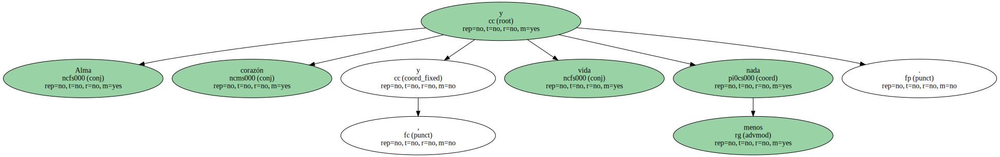También el último pedazo de una autoestima basada en su inexpugnabilidad doméstica , en la preservación del sagrado suelo de Chamartín durante la " era Cruyff ".
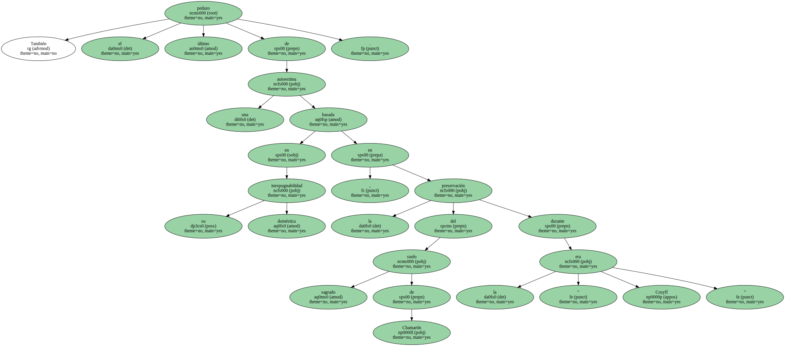* El Madrid precisa que el Deportivo gane la Liga , porque los gallegos no son considerados unos herederos , sino unos entrometidos que se supone temporales , que pertenecen a la actualidad más rabiosa y no a la historia más enrabietada.
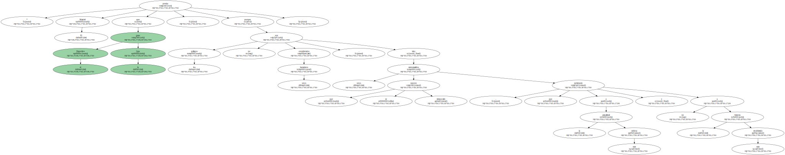Una estación de paso en el paso de las estaciones.

Los males blancos serían menores si fueran acompañados por un fracaso azulgrana.
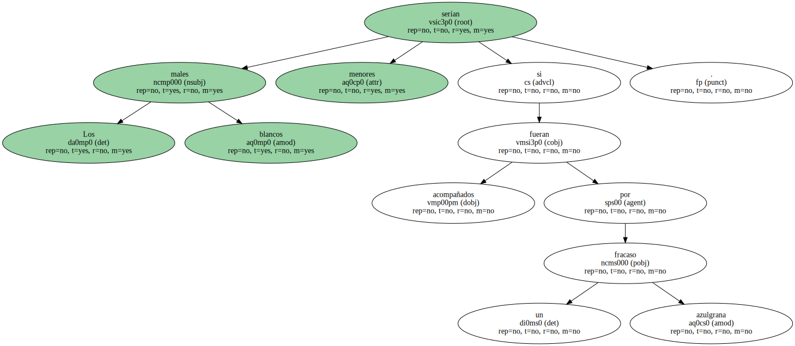Quedarían un tanto enmascarados a causa de ese fiasco del rival.
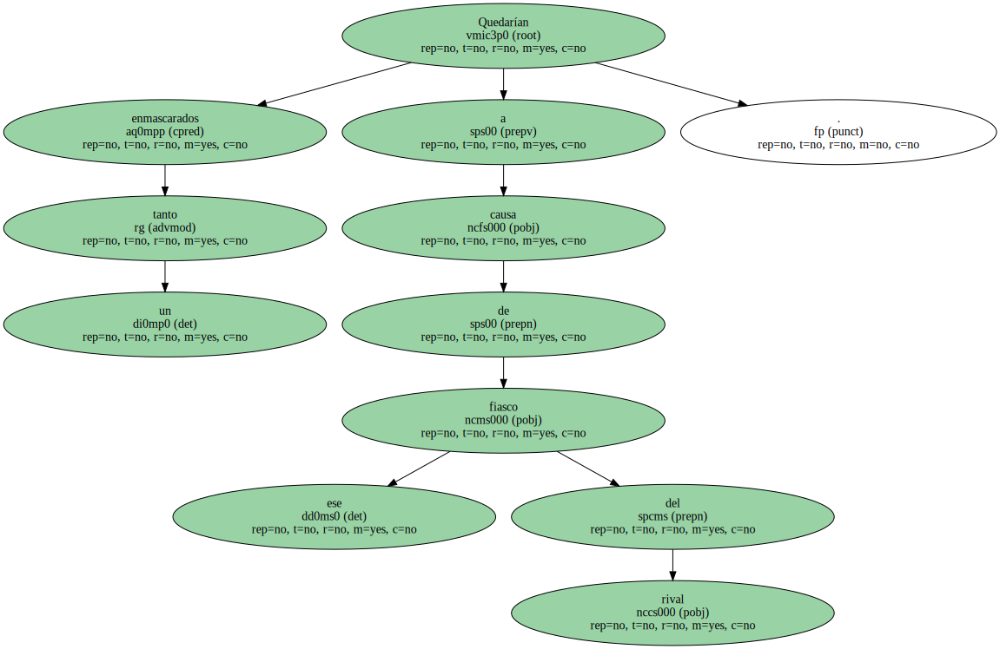Real y Barça practican desde siempre un ejercicio recíproco de canibalismo en la cumbre.
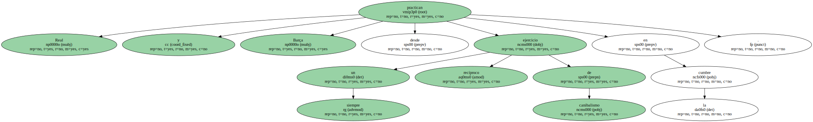Carne y sangre a todo pasto.
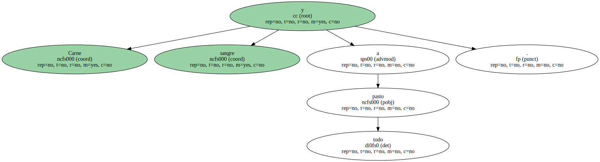